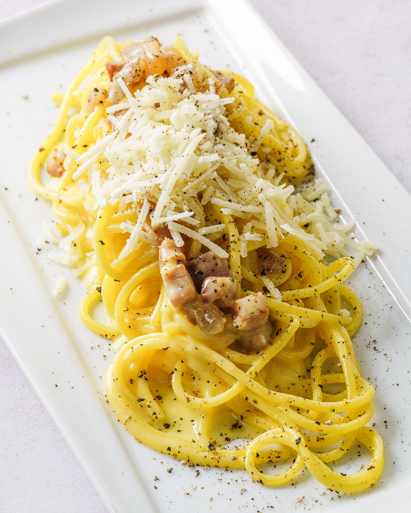

Spaghetti Carbonara

Description
Classic italian pasta dish using bacon and eggs. Creating a rich sauce using eggs and cheese without cream.
Ingredients
- Spaghetti
- Eggs
- Bacon
- Pecorino cheese
- Garlic
- Salt
- Pepper
Steps
- Boil spaghetti in salted water.
- Cook Bacon together with the Garlic on medium heat.
- Beat the eggs in a bowl and add salt and pepper.
- Add the cheese to the eggs and mix all together.
- When spaghetti are almost done drain them but make sure to keep some of the water.
- Once the Bacon is cooked add the spaghetti, turn of the heat and add one ladle of the water.
- Put one ladle of water in to the egg cheese mix and then add it to the pan.
- Mix everything together and enjoy!